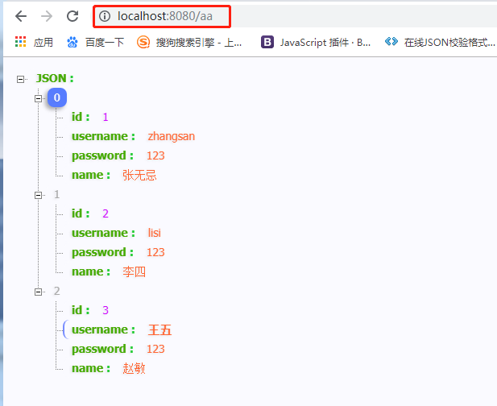

主要步骤
在主启动类添加@MapperScan
<dependency>
<groupId>org.mybatis.spring.boot</groupId>
<artifactId>mybatis-spring-boot-starter</artifactId>
<version>1.1.1</version>
</dependency>在application.yml中进行配置
#DB Configation
spring:
datasource:
driverClassName: com.mysql.jdbc.Driver
//注意如果出现了无法连接数据库问题，在tx后面添加 ?useUnicode=true&characterEncoding=utf-8&useSSL=false&serverTimezone = GMT
url: jdbc:mysql://127.0.0.1:3306/tx
username: root
password: 813100
jpa:
database: MySQL
show-sql: true
generate-ddl: truepojo实体类
package com.offcn.springbootdemo1.pojo;
public class UUser {
private Integer id;
private String username;
private String password;
private String name;
//此处添加set，get，构造方法以及重写toString
}mapper接口
package com.offcn.springbootdemo1.mapper;
import com.offcn.springbootdemo1.pojo.UUser;
import java.util.List;
public interface UUserMapper {
List<UUser> selectUUser();
}mapper映射文件
<?xml version="1.0" encoding="UTF-8" ?>
<!DOCTYPE mapper
PUBLIC "-//mybatis.org//DTD Mapper 3.0//EN"
"http://mybatis.org/dtd/mybatis-3-mapper.dtd">
<mapper namespace="com.offcn.springbootdemo1.mapper.UUserMapper">
<select id="selectUUser" resultType="com.offcn.springbootdemo1.pojo.UUser">
select * from user
</select>
</mapper>注意：如果mapper接口和mapper映射文件放在同一个地方
那么在运行会出现错误
解决方案：
1：在resources目录下建立一个和mapper接口相同的目录结构，把mapper映射文件放进去
2：如果想把mapper接口和mapper映射文件放在一起
那么在pom.xml中添加如下配置
<build>
<resources>
<resource>
<directory>src/main/java</directory>
<includes>
<include>**/*.properties</include>
<include>**/*.xml</include>
</includes>
<filtering>false</filtering>
</resource>
<resource>
<directory>src/main/resources</directory>
<includes>
<include>**/*.*</include>
</includes>
<filtering>false</filtering>
</resource>
</resources>
</build>在启动类上添加注解@MapperScan
package com.offcn.springbootdemo1;
import org.mybatis.spring.annotation.MapperScan;
import org.springframework.boot.SpringApplication;
import org.springframework.boot.autoconfigure.SpringBootApplication;
@SpringBootApplication
@MapperScan(basePackages = "com.offcn.springbootdemo1.mapper")
public class Springbootdemo1Application {
public static void main(String[] args) {
SpringApplication.run(Springbootdemo1Application.class, args);
}
}package com.offcn.springbootdemo1.controller;
//导包
@Controller
public class UUserController {
@Resource
private UUserMapper userMapper;
@RequestMapping("aa")
@ResponseBody
public List<UUser> selectUUser(){
List<UUser> uUsers = userMapper.selectUUser();
return uUsers;
}
}